Understanding Robot Co-Design: Exploiting the Asymmetry between the Designer and Controller
Abstract
Robot co-design jointly optimizes morphology and control against the same final objective, but does that mean the two optimizers should behave alike? To answer this, we create a test environment and explore it through the lens of three new metrics: spread, exploration, and generalization. By varying these properties independently, we find that effective co-design requires opposite behavior from the two optimizers: the controller requires broad generalization to new designs and suffers from wide sampling, whereas the designer barely benefits from generalization but must sample the design space broadly to find good designs. We show that the source of this asymmetry is due to the sequential structure of co-design in which the body is chosen before the controller acts, and that it can be explained through the Expected Value of Perfect Information. Our test bed also shows that broader morphology search can discover better designs but may simultaneously worsen the selection when the controller cannot evaluate unfamiliar bodies reliably. We observe optimization profiles in existing co-design methods, and combine our findings to construct SCOPER, which is tailored to exploit the optimizer asymmetry by maintaining a broad morphological search space, and using representation learning to increase controller generalization. In our experiments, SCOPER demonstrates the value of following these principles by outperforming prior co-design methods on task performance by ~50% and halving runtime.
Metric Definitions
Robot co-design has two optimizers: a designer that proposes a body, and a controller that drives it. We compare them using three properties — spread, exploration, and generalization — which the Co-Design Playground below lets you set directly. Real codesign algorithms don't expose these properties so directly, so before measuring them there, we first define the quantities every measurement is built on:
The number of module edits that turn body \(b\) into body \(b'\). The limbs \(\ell_n\) in each of the 8 slots are compared module by module outwards-in, meaning starting from the final position \(p = 1\). Limbs with different lengths gain one edit per extra module.
$$d_{\text{struct}}(b,b') = \sum_{n=1}^{8} d_{\text{limb}}(\ell_n, \ell'_n)$$ $$d_{\text{limb}}(\ell,\ell') = \sum_{p=1}^{\min(|\ell|,|\ell'|)} \mathbb{1}\big[\ell_p \ne \ell'_p\big] + \big|\,|\ell| - |\ell'|\,\big|$$Zero for identical bodies. If two bodies are identical except for a totally different three-module limb, the distance is 3.
How differently the Controller drives two bodies. Each body's control is reduced to how hard the Controller drives each limb slot over an episode — \(u_n\), its Joint Action Variance (JAV), the variance of the action commanded there. Two bodies are compared over the slots \(S\) they both have.
$$d_{\text{behav}}(b,b') = \frac{1}{|S|} \sum_{n \in S} \big| u_n(b) - u_n(b') \big|$$Zero when the Controller drives both bodies the same way.
\(b^\star\), the body the Designer would hand over if asked to choose rather than sample: its most common greedy draw. What it earns under the Controller's mean action, \(G(0)\), is the scale both generalization metrics divide by — fractions rather than rewards, so an algorithm earning ten times another's reward and decaying at the same rate reads the same.
$$G(0) = \bar R(b^\star)$$The reference point regret, perturbation distance and both generalization metrics measure from.
To draw bodies at distance \(k\), the Designer is made less greedy, its choices softened by a temperature \(T_k\), until its bodies average \(k\) edits from the committed body.
$$\mathbb{E}_{b \sim P_{T_k}}\big[\, d_{\text{struct}}(b, b^\star) \,\big] = k$$\(k = 0\) is the committed body itself; the largest \(k\) is a Designer choosing at random.
Using these, we can measure each metric in real codesign algorithms, for both the Designer and the Controller:
The average structural distance between two of the \(N\) bodies the Designer draws.
$$\text{spread}_{\text{Designer}} = \frac{2}{N(N-1)} \sum_{i < j} d_{\text{struct}}(b_i, b_j)$$Higher means wider spread. Zero means every draw is the same body.
The average behavioral distance between two of the \(N\) bodies the Designer draws.
$$\text{spread}_{\text{behav}} = \frac{2}{N(N-1)} \sum_{i < j} d_{\text{behav}}(b_i, b_j)$$Higher means wider spread. Its slope against \(d_{\text{struct}}\) separates the Controller's own specialization from the variety of bodies it was handed.
A Z-score of the committed body's performance relative to the bodies the Designer samples, according to the Designer's own critic \(v\). This measures how much the Designer's critic thinks it could have done better if it had sampled more greedily.
$$\text{regret}_{\text{Designer}} = \frac{v(b^\star) - \bar v}{\operatorname{sd}\big[v(b)\big]}$$Higher means more exploration. Zero means its draws look as good as its choice. It can go negative when the Designer and its critic disagree.
A Z-score of the Controller's deterministic actions relative to its sampled actions, according to the Controller's own critic \(V\). This measures how much the Controller's critic thinks it could have done better if it had sampled more greedily.
$$\text{regret}_{\text{Controller}} = \frac{\mathbb{E}_b\big[\bar V_\mu(b)\big] - \mathbb{E}_b\big[\bar V_\pi(b)\big]}{\operatorname{sd}_b\big[\bar V_\pi(b)\big]}$$Higher means more exploration. Zero means sampling has converged or the controller is not affecting performance.
The Designer's critic predicts each body's return, \(\hat R\); the Controller actually earns \(\bar R\). The critic is already off by a constant \(\delta_0\) on its own committed body, so that offset comes off every body first. What is left is each body's real error, and the metric is its typical size at distance \(k\), as a fraction of \(G(0)\).
$$e_i = \hat R(b_i) - \bar R(b_i) - \delta_0, \qquad \delta_0 = \mathbb{E}_{k=0}\big[\, \hat R - \bar R \,\big]$$ $$\text{excess error}(k) = \frac{1}{G(0)} \sqrt{ \frac{1}{N} \sum_{i=1}^{N} e_i^A e_i^B }, \quad b_i \sim P_{T_k}$$\(A\) and \(B\) are two halves of each body's episodes, so their product cancels the luck left in \(\bar R\) — which a size would otherwise count as critic error.
Zero means the critic judges unfamiliar bodies as well as familiar ones; rising means its judgement decays with distance. The sign of the gap, reported alongside, says which way — over-optimism sends a Designer into bodies that do not work, pessimism pins it to what it already knows.
The Controller's mean return, taking its mean action, on bodies at distance \(k\), as a fraction of what the committed body earns.
$$\hat G(k) = \frac{G(k)}{G(0)}, \qquad G(k) = \frac{1}{N} \sum_{i=1}^{N} \bar R(b_i), \quad b_i \sim P_{T_k}$$Every curve starts at 1. Staying there means a general Controller; a fast drop means it only works near the bodies its Designer makes. Above 1 means the Designer committed to a body its own Controller drives worse than the neighbours — a finding about the Designer.
Co-Design Playground
This model is a joint design and control problem, played out on a toy reward landscape. There are two optimizers here, one for design and one for control, both trying to work together to achieve the maximum reward. The designer acts first, sampling a point on the design axis. Then the controller samples an action on the control axis, conditioned on the design, and both optimizers see the resulting reward. The big dot shows the pair's current best guess at the optimal design and action, and the small dots show the points they've jointly sampled.
- Spread: how wide the optimizer's search is. Low spread means the optimizer will sample a small region of the landscape, and high spread means the optimizer will sample a larger region.
- Exploration: how often the optimizer samples points it is unsure of, as opposed to points it knows are good.
- Generalization: how wide a space the optimizer has good predictive power in. Low generalization means the optimizer can only predict good points in a small region, while high generalization means it can predict good points across more of the landscape.
This implementation uses gaussian means to model the optimizers, with a generic arbitrary reward landscape with local and global optima.
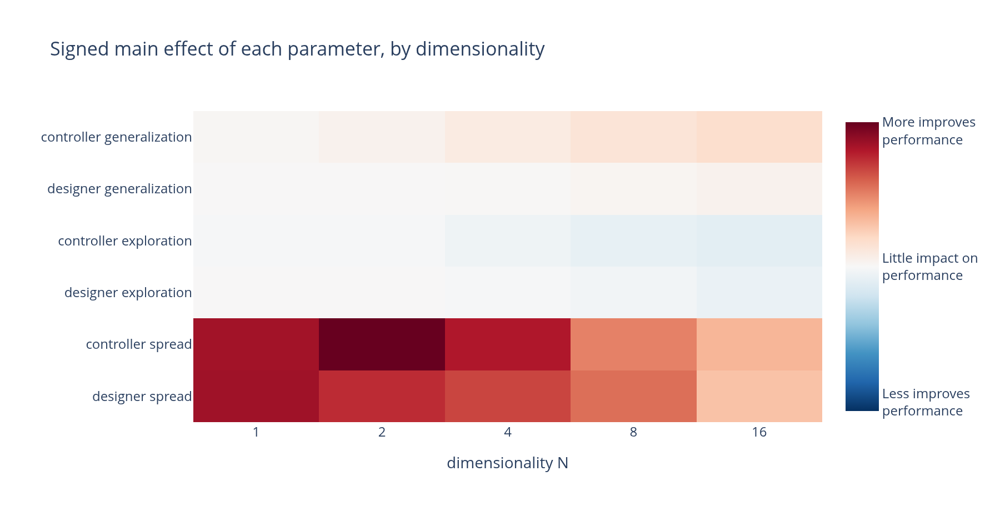
Experiments in this toy space showed that the designer should be doing the majority of the exploratory sampling, attempting to cover a wide range of the landscape, whereas the controller should be focusing on exploiting the known good design regions. Unsurprisingly, controller generalization is extremely important, although this is often challenging to achieve in real optimization. What is surprising is that the designer generalization proved relatively unimportant.
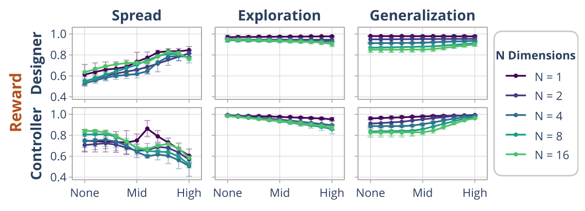
We also swept how often the designer proposes a fresh batch of bodies relative to how long the controller trains on each one. At a fixed evaluation budget, giving the controller a fresh design every single evaluation (a 1:1 ratio) beat every other ratio we tried — this is the setting SCOPER uses below.
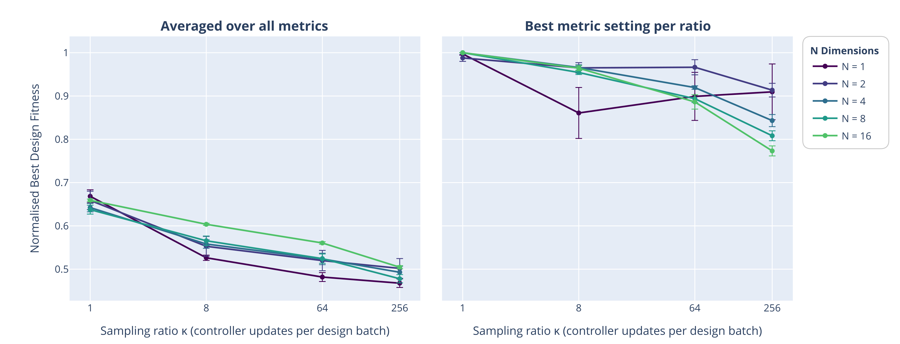
The asymmetry holds jointly, too: sweeping the sampling ratio and the landscape's dimensionality together, designer spread keeps helping and controller spread keeps hurting at every combination we tried.
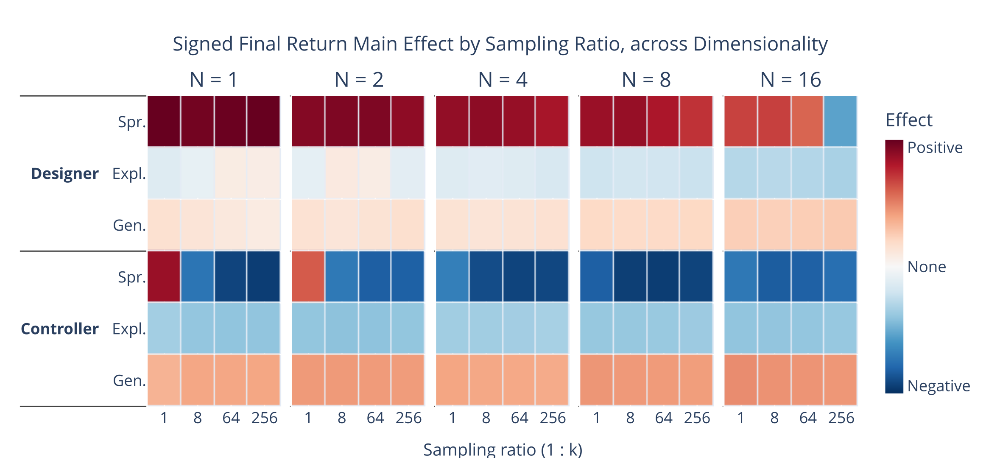
Co-Design on Robots
The toy landscape lets each property be set by hand. Real co-design algorithms offer no such control — their spread, exploration and generalization all emerge together from architecture and training. Here we measure them in a real robotics setting: assembling a modular Ant robot from limb modules, comparing two existing co-design methods against SCOPER, the method we build in the next section to test whether the toy findings can also guide new algorithms.
NGE, an evolutionary algorithm, keeps a broad designer spread throughout training, but its controller transfers poorly across morphology changes: changing a single module of its committed body cuts return to 43%. BodyGen, a pair of PPO-trained transformers, has the opposite problem — its shared controller retains far more return on nearby bodies, but its designer collapses onto a single body by roughly half-way through training. Neither combines both behaviors, which is exactly the asymmetry the toy landscape predicts a good co-design method needs.
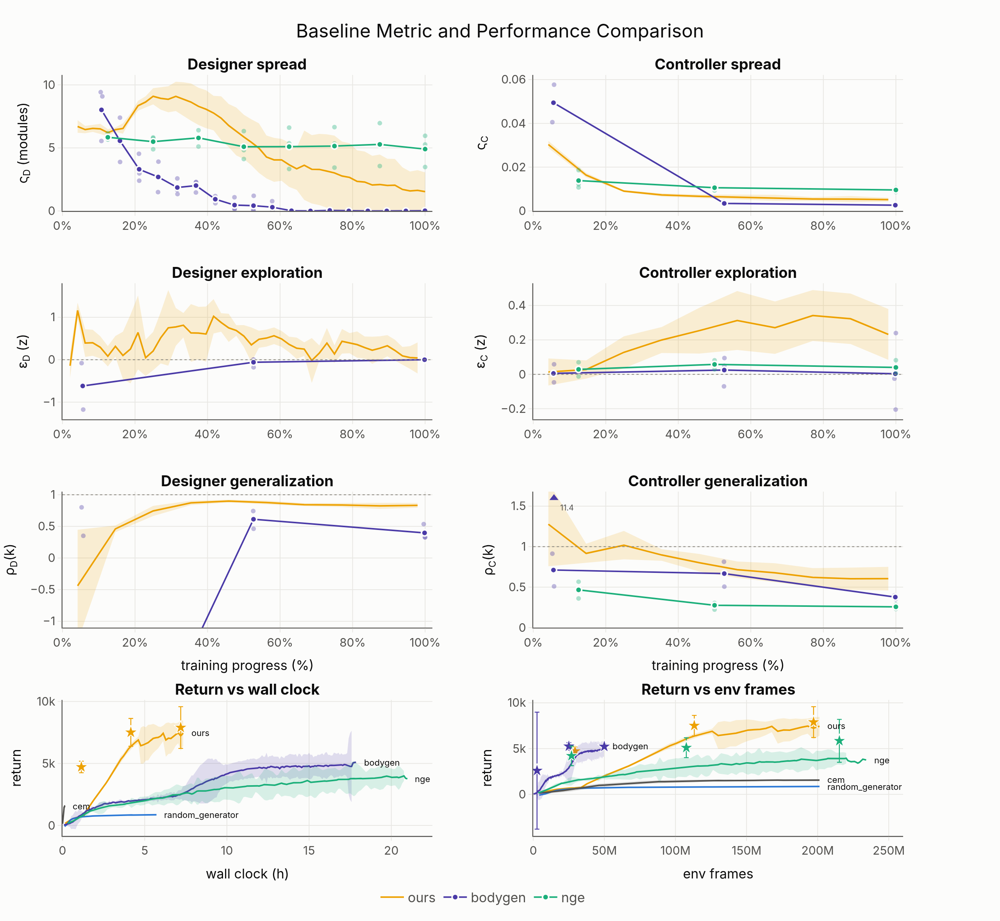
Baseline Comparisons
SCOPER
SCOPER (Structured Co-design Optimization with Physical Embodiment Representations) targets the asymmetry above directly: its designer samples broadly and converges slowly, while its controller acts near-greedily and shares a single transformer trunk with the designer, so representations learned for one carry over to the other.
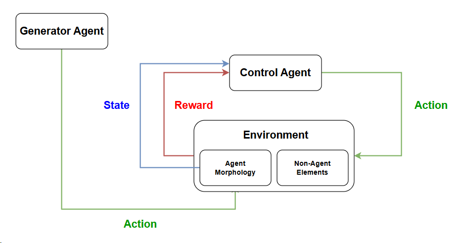
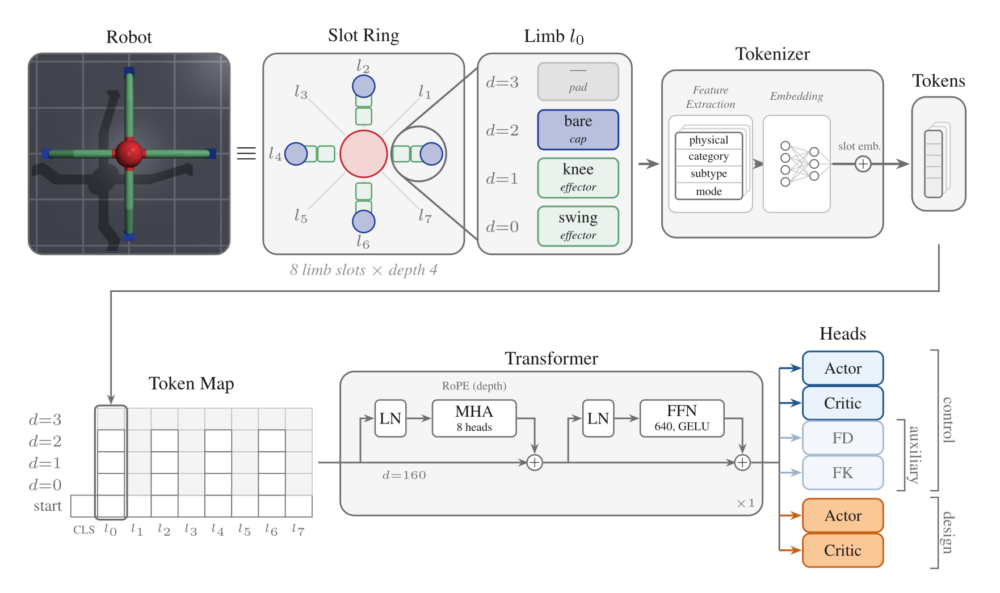
Training proceeds in windows of one episode: the designer samples a fresh body for every parallel environment, the controller trains on all of them with PPO plus the auxiliary losses, and at the end of the window the designer is updated on the returns its bodies earned.
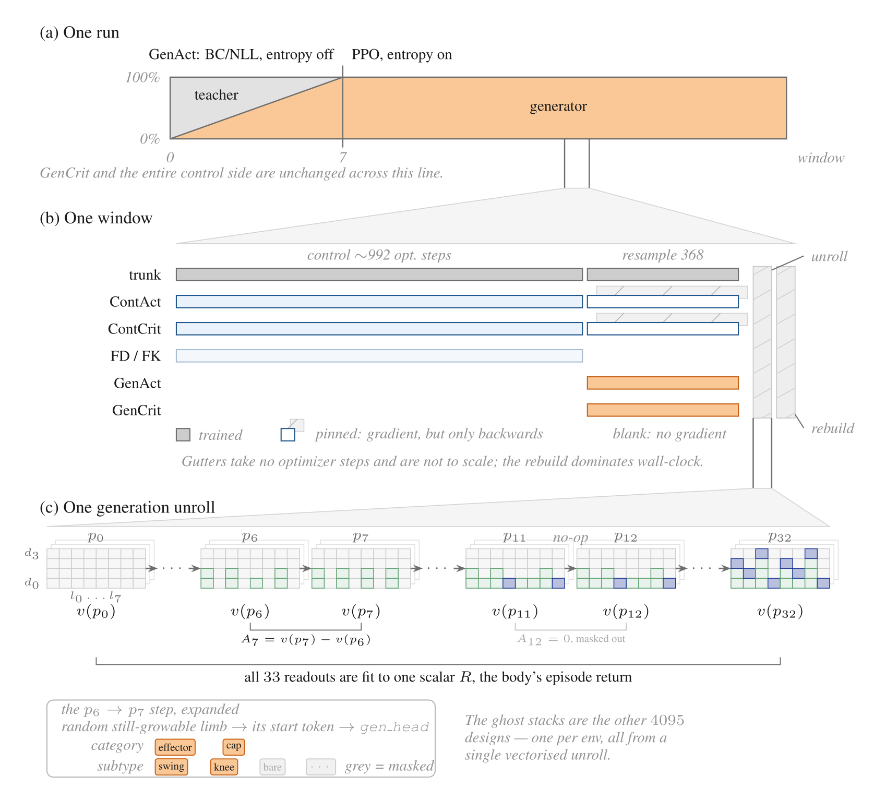
Results
Put together against two existing co-design methods on the Modular Ant task, SCOPER reaches the highest return, using about as many environment samples as random search or CEM but far fewer than NGE or BodyGen relative to the wall-clock time it takes:
| Method | Return | Specialized | Samples | Wall-clock (h) |
|---|---|---|---|---|
| Random design sampling | 861 ± 21 | — | 201M | 5.7 |
| CEM | 1560 ± 118 | — | 205M | 0.2 |
| NGE | 3974 ± 506 | 5850 ± 2341 | 225M | 20.9 |
| BodyGen | 4971 ± 862 | 5225 ± 261 | 50M | 17.6 |
| SCOPER | 7441 ± 1026 | 7892 ± 1684 | 201M | 7.3 |
Ablations
SCOPER rests on three choices: a shared backbone, forward-dynamics/forward-kinematics auxiliary objectives, and controller preservation across designer updates. We ablate each in turn, plus the cross-limb attention the backbone relies on, to check they move the metrics they're meant to.
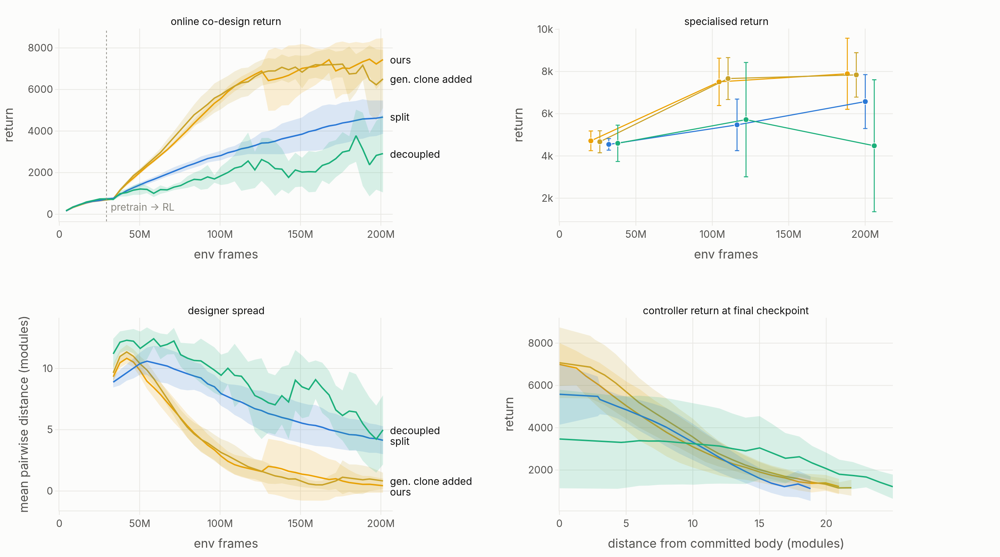
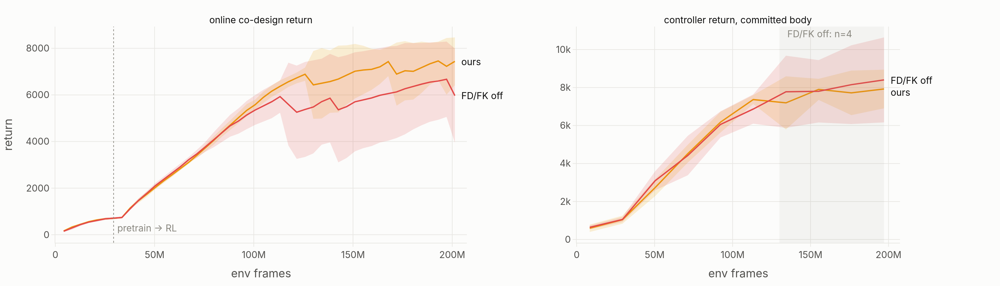
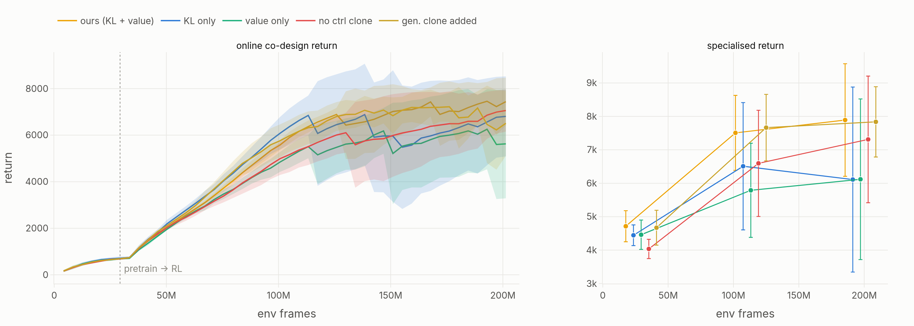
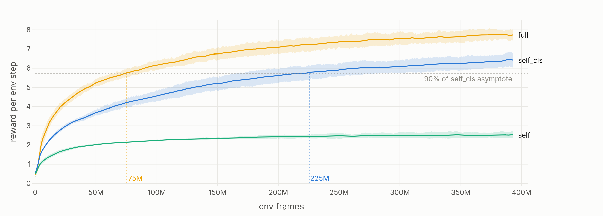
Conclusion
In this paper we investigate a fundamental quirk of co-design optimization, which is that the body's and the controller's optimizers are asymmetric in their preferred behaviors. Our experiments in both theoretical and applied environments demonstrate that spread is useful to the designer and not the controller, while generalization has a stronger benefit to the controller than the designer. Based on these results, we present a simple pair of principles to guide the development of future co-design algorithms: the designer should maintain sampling breadth, while the controller must generalize well and sample greedily.
Additionally, we demonstrate that the co-design algorithms NGE (Wang et al., 2018b) and BodyGen (Lu et al., 2025) are both limited by the underperformance of one of their optimizers. To test our hypothesis, we developed SCOPER, which uses representation learning and a shared-network design to improve controller generalization, and high entropy on the designer heads to enforce designer spread. Our ablations corroborate both the efficacy of these additions for producing the desired behaviors, and for increasing performance.